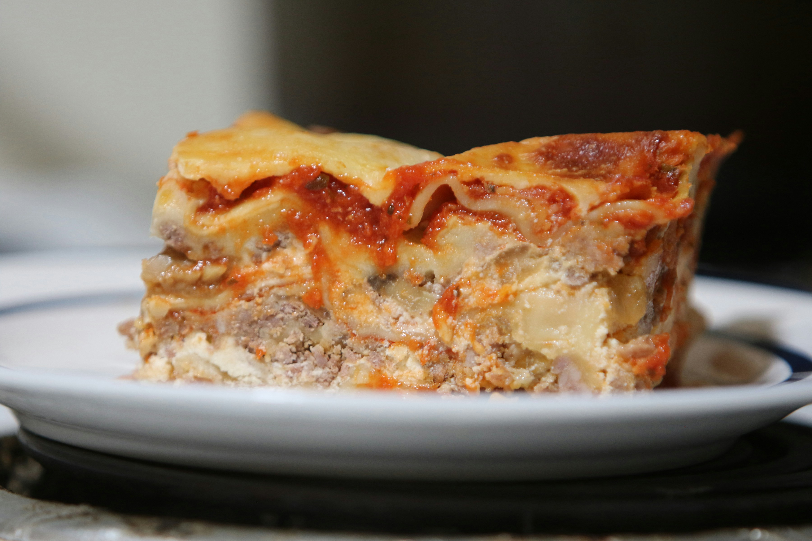

Lasagna

Description
Lasagna is a classic Italian dish made with layers of pasta, rich meat sauce, creamy béchamel, and melted cheese. It is baked until golden and bubbly,
making it the perfect comfort food for any occasion.
This recipe is easy to follow and produces a delicious homemade lasagna that the whole family will love.
Ingredients
- 12 lasagna noodles
- 500g ground beef
- 2 cups tomato sauce
- 2 cups béchamel sauce
- 2 cups mozzarella cheese
- 1 onion chopped
- 3 cloves garlic
- Salt and pepper to taste
- Olive oil
Steps
- Preheat oven to 375°F (190°C).
- Cook lasagna noodles according to package instructions.
- Heat olive oil in a pan and fry onion and garlic until soft.
- Add ground beef and cook until browned.
- Add tomato sauce and simmer for 15 minutes.
- In a baking dish, spread a layer of meat sauce.
- Add a layer of lasagna noodles.
- Add a layer of béchamel sauce.
- Repeat layers until all ingredients are used.
- Top with mozzarella cheese.
- Bake for 45 minutes until golden and bubbly.
- Let cool for 10 minutes before serving.
Home